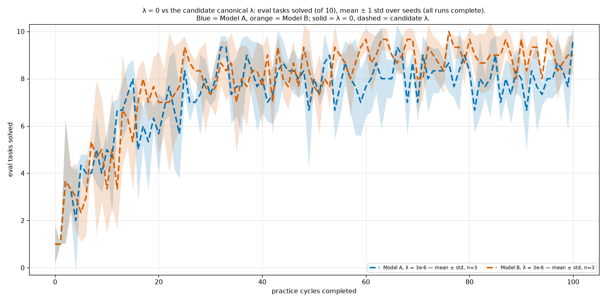
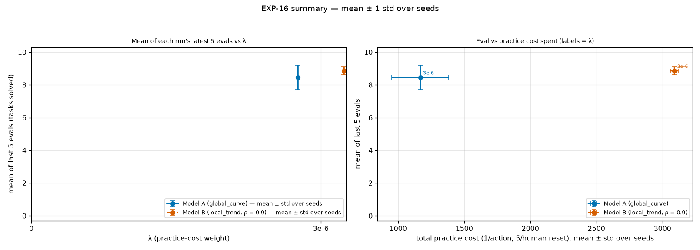
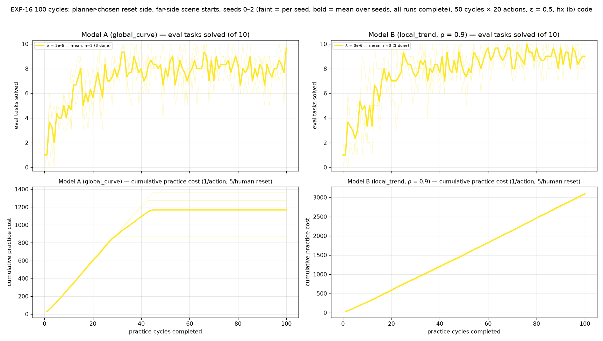

← Experiment log (committed copy). Committed snapshot of a live sub-page, taken 2026-09-27 10:45; files that were not committed are marked “not committed”.
Code: 4d045c1f (#378 on #377): human reset only, no reset pruning; the planner chooses the reset side; practice scenes start far-side. Grid engine, 50 cycles × 20 actions, ε = 0.5, human reset cost 5, non_epsilon evidence, seeds 0–2 for arms whose seed 0 peaked at ≥ 5/10 (Model A λ ≥ 1e-4 has seed 0 only). Decision view below is seed 0 only (as pre-registered); the per-seed figure adds seeds 1–2. Colour encodes λ (sequential), not the project's arm-role colour, since every arm has the same mechanism.
meanstd_eval_onegraph.png]

meanstd_eval.png]meanstd_cost.png]final_vs_lambda_and_cost.png]
seeds_vs_lambda.png]
| model | λ | seed | status | cycles | latest eval | mean last 5 | practice cost | cycles with zero practice | practice tosses scored | eval per checkpoint |
|---|---|---|---|---|---|---|---|---|---|---|
| global_curve | 3e-6 | 0 | done | 100/50 | 9/10 | 7.6 | 1361 | 55/100 | 138/353 | 0 1 0 2 0 5 3 4 3 3 4 3 7 7 7 9 3 5 3 6 4 7 9 4 7 7 6 7 8 7 7 9 9 10 7 6 5 9 10 5 7 7 6 9 8 9 7 7 7 4 8 8 9 9 5 6 8 6 8 5 9 6 9 5 7 7 8 10 5 8 7 9 7 7 7 9 9 8 9 9 8 6 6 7 6 9 6 7 6 7 9 6 8 5 7 8 7 9 8 5 9 |
| global_curve | 3e-6 | 1 | done | 100/50 | 10/10 | 8.4 | 1273 | 57/100 | 107/344 | 2 1 6 4 1 4 5 4 6 4 6 3 6 5 6 7 4 7 8 6 5 6 6 10 7 9 8 7 9 8 7 8 9 9 9 8 10 10 7 9 10 8 7 10 10 8 9 8 9 10 8 7 7 9 7 9 8 9 10 8 6 9 7 10 9 9 10 8 8 9 8 10 10 9 9 8 10 7 6 9 9 8 10 8 10 10 7 8 9 9 8 9 8 9 8 7 8 7 8 9 10 |
| global_curve | 3e-6 | 2 | done | 100/50 | 10/10 | 9.4 | 868 | 71/100 | 51/227 | 1 1 5 4 5 4 4 4 6 5 5 8 7 8 9 8 8 6 5 7 8 7 8 6 3 9 7 7 5 9 8 7 10 9 6 9 8 8 8 9 7 6 9 6 8 8 9 9 9 6 8 7 10 9 8 8 10 9 5 8 8 9 10 9 8 8 10 9 8 9 6 8 7 9 9 8 7 8 10 9 8 6 8 8 8 8 8 9 7 9 7 5 9 9 7 9 9 10 9 9 10 |
| local_trend | 3e-6 | 0 | done | 100/50 | 8/10 | 8.6 | 3096 | 0/100 | 336/810 | 0 1 0 2 1 2 1 6 4 3 2 5 5 5 5 5 8 7 7 8 6 6 8 10 9 10 9 8 7 5 7 6 8 10 7 8 6 10 9 7 6 8 6 10 9 9 8 8 10 6 7 8 8 7 10 9 9 6 8 9 9 9 8 10 10 9 9 10 9 10 7 7 8 10 8 9 10 9 9 8 9 8 9 7 7 10 10 10 9 8 10 7 10 9 8 10 10 7 9 9 8 |
| local_trend | 3e-6 | 1 | done | 100/50 | 9/10 | 8.8 | 3052 | 0/100 | 336/828 | 2 1 6 4 4 1 3 5 1 4 2 2 1 5 6 3 5 8 8 6 5 6 3 5 5 9 9 8 9 9 7 9 10 7 10 4 9 6 8 10 10 10 6 9 7 7 8 8 10 9 8 9 8 9 10 9 8 10 9 9 10 7 9 9 9 9 9 8 10 9 7 8 10 9 8 9 10 9 10 8 10 10 10 9 10 8 8 10 10 9 10 9 9 10 8 10 9 10 8 8 9 |
| local_trend | 3e-6 | 2 | done | 100/50 | 10/10 | 9.2 | 3122 | 0/100 | 371/829 | 1 1 5 4 4 4 5 5 9 8 6 8 4 10 8 8 8 9 6 9 10 9 10 7 9 9 8 9 9 9 8 8 8 8 9 9 9 7 8 8 7 9 9 9 8 7 10 7 8 10 8 5 8 7 8 9 9 8 9 10 10 10 10 10 10 9 8 9 10 10 10 9 10 8 10 7 10 10 9 10 10 9 7 10 10 9 9 9 8 7 9 9 9 9 8 9 9 8 9 10 10 |